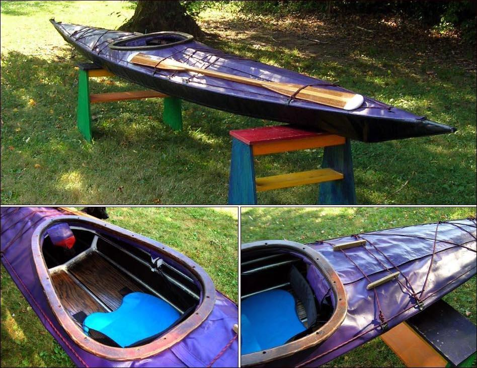

| (New) Sea Tour 17-R by David Long (US) | Menu Last Page Next Page |
|

Dave has written a review of the boats performance....."I was able to get out on the water for about 6 hours
on Friday. Here are some additional comments about the
performance of the boat. I spent the day in Fisher's
Island Sound off Mystic, Stonington, and Noank. I got
to paddle in and around some small islands, experience
some changing sea and wind conditions in the change
from windward to leeward sides of the islands, etc. I
also spent some time in some of the marsh areas - all
in all, a pretty great day.
I started the day at Mystic seaport and got to paddle up close to the Amistaad and the whaler, Charles W. Morgan and got to stare up at the tall ships from water level, a pretty neat view. Out into the sound it was pretty calm until I reached the windward side of Mason's Island. There I started to get nervous in the 3'+ swells so I came back a bit and found a small beach area and practiced leaning and capsizing the kayak to test the secondary stability. I found I had to put the coaming lip pretty well into the water to get the boat to turn over. When I went out again on the windward side I was much more relaxed and convinced I could trust the stability of the boat. The swells were large enough to get some water breaking over the boat now and then so it was a lot of fun. The bow seems to stay up pretty well and even when it dips under for a couple of seconds it pops right back up. In following seas coming back in, the bow did not dip under at all. I was not uncomfortable regardless of the direction of the boat with respect to the wave direction and found that I could turn the boat 360 degrees in the waves and not feel like I was about to go over. In my limited experience, the secondary stability seems to be very good and I'm finding that I like the feel of the boat and the movement and flex of the frame even more as conditions get a little rougher. In the calm water of the marsh, the boat moves very quietly and I was able to get a lot closer to some of the birdlife (herons, osprey) than I ever have from the shore. I think the boat would be a good platform for some bird photography. I've started thinking about how to adapt a tripod mount to fit on the front of the coaming. At this point in my kayaking experience, the boat is still everything I could want. "...David |
|